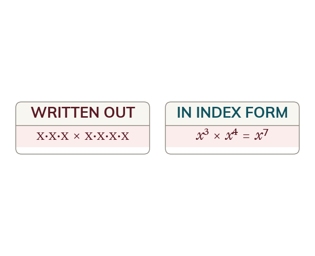

An index counts factors
An index counts how many times the base is a factor. Multiplying powers of one base adds those counts.
An index counts how many times the base appears as a factor. Multiplying two powers of the same base simply joins the two lists of factors, so the counts add; dividing cancels factors, so the counts subtract.